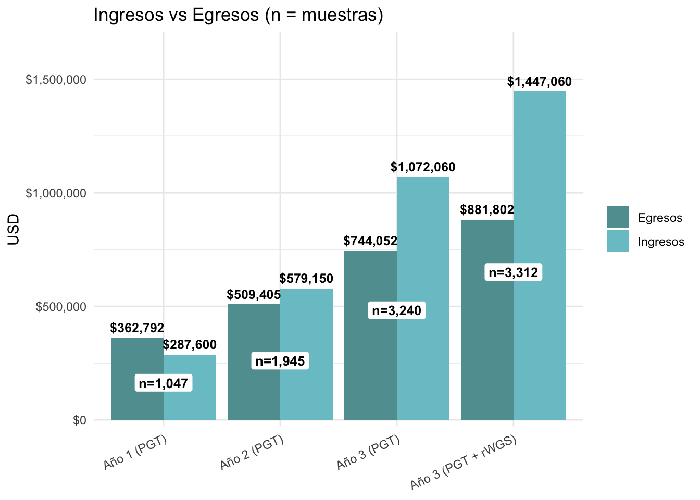
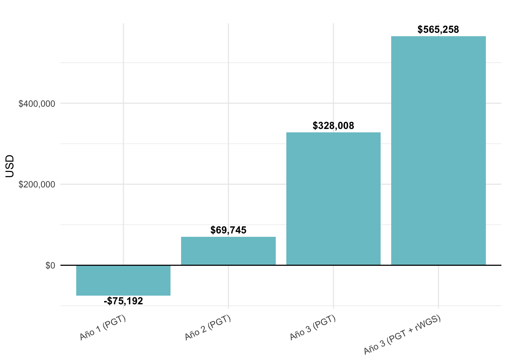

| item | project | detalle | valor_fmt |
|---|---|---|---|
| Gastos Capital | FastPGT | Equipamiento Arranque | $24,500.00 |
| GO Variable | FastPGT | Serie Experimental 94 | $15,282.00 |
| GO Variable | FastPGT | Serie Gratuita 100 | $20,000.00 |
| GO Fijos | 2PQ | Salarios y Alquiler Anualizado | $155,500.00 |
| Gastos Capital | FastPGT | Segundo MinION | $4,500.00 |
| EGRESOS | FastPGT | Gastos totales | $362,792.00 |
| VENTAS TOTALES | FastPGT | Ventas PGT Totales | $287,600.00 |
| RESUMEN | FastPGT | Ventas menos egresos | -$75,192.00 |
Apéndice Inversión
NotaContenido
- GASTOS FIJOS
- Proyecto Fast y Regular PGT
- Yaguarecito
- Cash Flow a 3 años
Insumos: Apéndice técnico. Analytical: Insumos ONT
Delivery 4: Apéndice económico. Documento Ppal.
Objetivo del Apéndice
Este apéndice detalla la inversión inicial necesaria para el arranque de 2PQ: Precision & Quick Genomics, considerando FastPGT como su primer producto y la rWGS de Yaguarecito, como segundo producto luego de su puesta a punto.
El flujo de fondos (Cash-flow) y el retorno se estima en 3 años sucesivos de incremento de ventas.
A continuación se muestran la siguiente estimación de gastos anuales:
- Estimación de Gastos de Capital (GC)
- Año 1: Arranque FastPGT, equipamiento básico.
- Año 2: Consolidación, y equipamiento adicional.
- Año 3: Yaguarecito. Equipamiento específico y secuenciador.
- Estimación de Gastos Operativos (GO)
- Año 1 a 3. GO Fijos : salarios, alquiler de laboratorio, marketing, asesoramiento normativo, legal, etc.
- Años 1 a 3. GO Variables: insumos FastPGT, Yaguarecito, Nube AWS y otros costos.
- Resumen del cash-flow a 3 años.
Año 1. Ingresos y Egresos
Tabla resumen
Año 2. Ingresos y Egresos
Tabla resumen
| item | project | detalle | valor_fmt |
|---|---|---|---|
| GO Variable | rWGS | Primera fase 25 | $23,000.00 |
| GO Variable | rWGS | Segunda fase 25 | $16,250.00 |
| Gastos Capital | FastPGT | Consilidacion Labo | $24,500.00 |
| EGRESOS | FastPGT | Gastos totales | $509,405.00 |
| VENTAS TOTALES | FastPGT | Ventas PGT Totales | $579,150.00 |
| RESUMEN | FastPGT | Ventas menos egresos | $69,745.00 |
Año 3. Ingresos y Egresos
| item | project | detalle | valor_fmt |
|---|---|---|---|
| Gastos Capital | rWGS | PrometION 2 y Equipos | $74,000.00 |
| EGRESOS | rWGS | Gastos totales | $63,750.00 |
| EGRESOS | FastPGT | Gastos totales | $744,051.50 |
| VENTA TOTALES | rWGS | Ventas Yaguarecito | $375,000.00 |
| VENTAS TOTALES | FastPGT | Ventas PGT Totales | $1,072,060.00 |
| RESUMEN | FastPGT | Ventas menos egresos | $328,008.50 |
| RESUMEN | FastPGT + rWGS | Ventas menos egresos | $515,840.50 |
Tabla resumen anual
| Escenario | Ingresos_USD | Egresos_USD | Resultado_USD |
|---|---|---|---|
| Año 1 (PGT) | $287,600.00 | $362,792.00 | -$75,192.00 |
| Año 2 (PGT) | $579,150.00 | $509,405.00 | $69,745.00 |
| Año 3 (PGT) | $1,072,060.00 | $744,051.50 | $328,008.50 |
| Año 3 (PGT + rWGS) | $1,447,060.00 | $881,801.50 | $565,258.50 |
Gráfico Ingresos vs Egresos Anuales

Gráfico Resultado Neto
